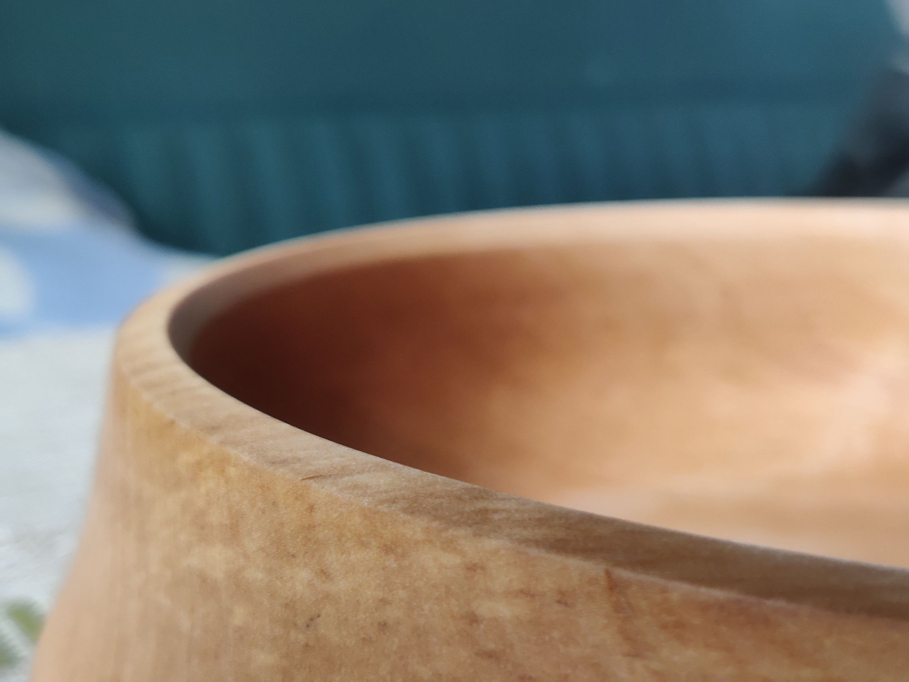
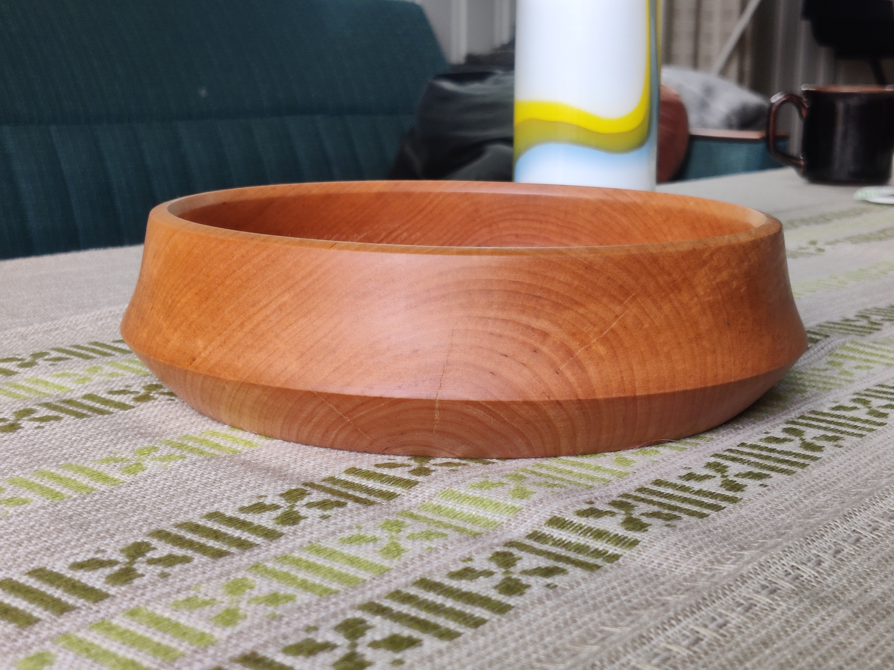

Lystbetont / Tredreiing
Dreid skål
En dreid skål i bjørk, laget på modellverkstedet på universitetet. Denne er den siste i en rekke større og mindre prosjekter jeg har dreid.
Å formgi et emne fra en grov stokk til en oljet og glatt skål er en svært intens og morsom prosess. Hendene og verktøyets bevegelse har en direkte og umiddelbar virkning på emnet.
For å parafrasere Michelangelo: "Skålen ligger klar inne i stokken. Det handler bare om å fjerne materialet rundt."


